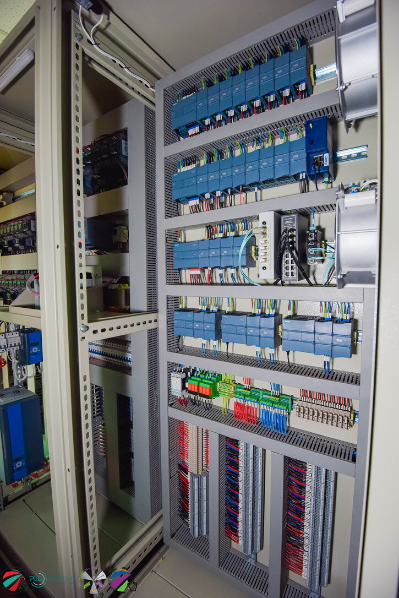

Watchdog Automation successfully delivered the complete automation and instrumentation system for a dual-train seawater desalination facility, each plant rated at 50 million liters per day (MLD), providing a total production capacity of 100 MLD of potable water.
The project covered end-to-end process automation, from seawater intake to final pressurized water output, including integration of process control systems, instrumentation, telemetry, and centralized monitoring infrastructure. This large-scale project demonstrates Watchdog Automation's capability to engineer and deploy high-capacity water treatment automation systems aligned with modern smart water infrastructure standards.
The automation system was designed to cover the complete desalination process chain, from raw seawater intake all the way through to final pressurized potable water output. Each process stage was engineered to ensure stable plant operation, optimized process efficiency, and reliable water quality output.
The project included the installation of a comprehensive instrumentation system to continuously monitor critical water quality and process parameters throughout the desalination process.
Endress+Hauser CDP20 analyzers were utilized for water quality monitoring, ensuring high-accuracy measurement and long-term reliability in demanding process conditions. These analyzers continuously track key compliance parameters across all stages of the desalination process.
Siemens MAG 8000 electromagnetic flowmeters were deployed for precise flow measurement across key process lines. Selected for their proven reliability in water utility applications, these meters provide accurate volume measurement even under varying flow conditions typical of large-scale desalination operations.
Pressure instrumentation and process sensors were installed across multiple stages of both plants to ensure continuous process monitoring and operational safety — covering intake systems, RO trains, post-treatment stages, and final distribution pressure points.
The desalination plants are controlled using a Siemens SIMATIC S7-1200 PLC-based automation system, providing reliable and scalable control for distributed process operations across both plant facilities.
Supervisory monitoring and control are implemented through a PC-based Siemens WinCC Unified SCADA system, offering advanced features for plant operators. Each plant integrates approximately 1,000 power and process tags, reflecting the complexity and scale of the desalination operation.
A key feature of the project is the implementation of a centralized remote monitoring system, enabling real-time visibility of both plant operations from a remote control center. All process data — including water quality parameters and operational metrics — are transmitted to the central monitoring station.
A custom-developed remote monitoring solution based on VB.NET architecture, designed specifically for water utility applications. Watchdog DataSpy consolidates all plant data streams into a single centralized interface, enabling rapid detection of deviations and remote operational response without requiring on-site personnel.
EWON Flexy 205 industrial telemetry modules provide secure communication between both plant systems and the central monitoring site, enabling continuous real-time data transmission across all remote locations.